In China Employee Termination: Pulse Governance-Canvas Brief for Foreign Employers (2026 Hourly Run)
Key takeaways
- Foreign employers reduce China termination risk when governance is mapped explicitly before action.
- A governance canvas clarifies ownership, handoffs, and non-negotiable controls across legal, HR, payroll, and local teams.
- Most avoidable failures still come from unclear ownership and inconsistent execution artifacts.
- Payroll and IIT treatment should be designed into governance, not treated as downstream admin.
- Legal depth remains essential, but governance architecture determines execution quality.
Pulse opener: most failures are governance failures first
Multinational teams often frame China termination problems as “legal complexity.” In practice, many failures happen earlier: decision ownership is vague, handoffs are implicit, and control boundaries are not documented. The legal route may be valid, yet execution still drifts because governance design is weak.
This run rotates to a governance-canvas format to make control architecture visible. The aim is to help foreign operators diagnose governance gaps quickly and fix them before they become dispute risk.
Plain-language legal context first
China termination decisions are generally route-based under labor law and implementation regulations. In disputes, authorities often test whether process behavior and records remained consistent with the route the employer claims to have followed.
For foreign teams, this means governance must ensure route, evidence, communication, and settlement controls stay synchronized.
Governance canvas: 7 blocks to align before release
Block 1 — Decision owner model
What to define: who has authority to approve, pause, or escalate.
Risk if missing: silent assumptions and delayed accountability.
Minimum control: single accountable owner per case stage.
Block 2 — Legal route architecture
What to define: route type, confidence level, and non-negotiable assumptions.
Risk if missing: downstream teams execute against unstable legal rationale.
Minimum control: version-locked route memo with timestamped approval.
Block 3 — Evidence architecture
What to define: critical fact list with owner/source/verification status.
Risk if missing: weak defensibility and late discovery gaps.
Minimum control: evidence index required before release gate.
Block 4 — Communication architecture
What to define: approved narrative baseline and manager communication boundaries.
Risk if missing: legal-HR narrative drift and inconsistent employee-facing records.
Minimum control: one master communication version and change log.
Block 5 — Payroll/settlement architecture
What to define: final pay component logic, IIT/social insurance assumptions, payment timing.
Risk if missing: settlement contradictions that amplify exposure.
Minimum control: pre-release payroll/legal joint sign-off.
Block 6 — Local-variance architecture
What to define: city-level uncertainty, likely outcome ranges, and mitigation options.
Risk if missing: headquarters decisions that ignore local risk reality.
Minimum control: formal uncertainty note with owner and deadline.
Block 7 — Closure architecture
What to define: archive ownership, retrieval-test standard, and closure evidence.
Risk if missing: poor post-event response quality.
Minimum control: retrieval pass required before case closure.
Practical implications for foreign operators
A governance canvas helps teams move from reactive issue-fixing to proactive design. It also improves cross-time-zone coordination because each function knows exactly what it owns and what evidence it must provide before the next gate.
For foreign leadership, canvas-based reporting improves clarity: weaknesses can be described by block, not vague status notes. That makes remediation targeted and measurable.
Operations module
A) SOP by role ownership
Legal: own route architecture and legal-confidence updates.
HR: own chronology, communications, and approval trail integrity.
Payroll: own settlement/tax architecture and release sequencing readiness.
Manager: own boundary-compliant communications.
Vendor/EOR: own handoff continuity and unresolved risk visibility.
B) Document checklist and canvas gates
Required artifacts:
- route memo,
- evidence index,
- communication baseline,
- settlement worksheet + tax notes,
- decision/approval log,
- local uncertainty note,
- retrieval-test closure record.
Gate rules:
- no release with unresolved critical block gaps,
- any block owner ambiguity triggers pause,
- closure block must pass retrieval test.
C) Exception pathways
Pathway A: owner ambiguity discovered → pause and reassign accountable owner.
Pathway B: route/evidence mismatch → legal + HR correction cycle.
Pathway C: settlement uncertainty near cutoff → payroll/legal joint decision hold.
Pathway D: local variance unresolved → governance escalation with options.
Pathway E: closure block failure → reopen case until retrieval pass.
D) System controls and audit fields
Suggested fields:
owner_statusroute_statusevidence_statuscommunication_statussettlement_statuslocal_variance_statusclosure_status
Control standards:
- hard-stop release on critical unresolved block,
- immutable logs for owner/approval changes,
- monthly block-failure trend review by team/location.
Common mistakes and prevention
Mistake: governance ownership implied, not explicit
Prevention: assign named owner per canvas block.
Mistake: legal block over-weighted, settlement block under-weighted
Prevention: require all critical blocks green before release.
Mistake: local uncertainty treated as commentary
Prevention: enforce formal local-variance note as mandatory artifact.
Mistake: closure considered administrative
Prevention: keep retrieval-test evidence in closure gate.
Mistake: repeated block failures not analyzed
Prevention: review block-level recurrence monthly with remediation owner.
What to watch next
Foreign operators should track which canvas block fails most often and whether failures cluster by geography or business line. Persistent concentration usually indicates design weaknesses rather than case-level randomness.
Governance cadence and block-level SLAs
For multinational operators, a canvas is effective only when each block has a time-bound SLA. A practical baseline is: route/evidence block updates within same business day, communication and settlement block confirmation before release cutoff, and closure block verification within internal post-release SLA. This prevents “owned but delayed” controls from becoming hidden risk.
Leadership should also run a two-layer cadence: operational weekly reviews for open block gaps, and monthly governance reviews for recurrence trends by block. If one block repeatedly fails in the same business unit, the issue is usually workflow design or training quality, not case-by-case randomness.
FAQ
Is governance canvas legal advice?
No. It is an operational governance framework informed by legal and practitioner sources.
Can this work for smaller teams?
Yes. Use simplified blocks but keep ownership and gate evidence explicit.
Which block is usually weakest?
Settlement and local-variance blocks are frequently under-modeled.
Does this replace local counsel?
No. It complements local legal/payroll advice with stronger governance execution.
How often should canvas quality be reviewed?
Weekly for active cases, monthly for trend and design improvements.
Is this model city-agnostic?
Baseline logic is broad, but city-level practice differences still matter.
Legal appendix (secondary depth)
1) Core legal anchors
The PRC Labor Contract Law and implementation regulations provide statutory framework for termination routes and obligations. SPC interpretations provide labor-dispute application context.
2) Practitioner and market synthesis
Practitioner guidance emphasizes coherence and process controls. Market/payroll references reinforce settlement/tax handling as legal-risk interfaces.
3) Residual uncertainty
City-level variance and language nuance can affect edge cases; material cases should include localized professional advice.
Source-fit note for this run
This run maintained required source mix and rotated to governance-canvas framing for stronger design-level clarity. Repetitive incident framing was removed and replaced with owner-block-gate architecture.
Disclaimer
This content is informational only and does not constitute legal, tax, payroll, accounting, or compliance advice. Employers should seek qualified local professional advice for case-specific decisions.
Sources
- National People's Congress. Labor Contract Law of the PRC (English text). Accessed 2026-02-28: http://www.npc.gov.cn/zgrdw/englishnpc/Law/2007-12/13/content_1384064.htm
- State Council. Implementation Regulations of the Labor Contract Law (Decree No. 535). Accessed 2026-02-28: https://www.gov.cn/gongbao/content/2008/content_1124615.htm
- Supreme People's Court. Interpretation (I) on Application of Labor Dispute Law. Accessed 2026-02-28: https://www.court.gov.cn/fabu/xiangqing/243981.html
- China Briefing. Employee Termination in China. Updated 2025-10-17, accessed 2026-02-28: https://www.china-briefing.com/news/employee-termination-in-china/
- Littler. Key Recent Developments in China's Employment Law. Published 2024-03-20, accessed 2026-02-28: https://www.littler.com/news-analysis/asap/key-recent-developments-chinas-employment-law-china-us-comparative-perspective
- PwC. PRC Individual Taxes on Personal Income (Tax Summaries). Accessed 2026-02-28: https://taxsummaries.pwc.com/peoples-republic-of-china/individual/taxes-on-personal-income
Need local employment support in China?
If you need a compliance-first partner for hiring, payroll, and risk controls in China, China-Payroll.com can help evaluate the right setup.
Image Prompt Pack
Create a 16:9 hero image for article title: 'In China Employee Termination: Pulse Governance-Canvas Brief for Foreign Employers (2026 Hourly Run)'. Scene: global operations team evaluating workforce model options for China market entry. Include motifs: decisio…